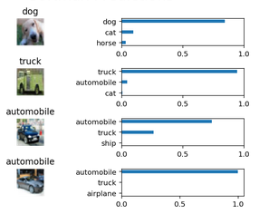

In this project, we classify images from the CIFAR-10 dataset. The dataset consists of airplanes, dogs, cats, and other objects. Here, we preprocessed the data, then train a convolutional neural network on all the samples. We normalize the images, one-hot encode the labels, build a convolutional layer, max pool layer, and fully connected layer. At then end, we inspect their predictions on the sample images.
Thedataset
The CIFAR-10 dataset consists of 60000 32x32 color images in 10 classes, with 6000 images per class. There are 50000 training images and 10000 test images.
The dataset is divided into five training batches and one test batch, each with 10000 images. The test batch contains exactly 1000 randomly-selected images from each class. The training batches contain the remaining images in random order, but some training batches may contain more images from one class than another. Between them, the training batches contain exactly 5000 images from each class
How does it work?
With a completely trained model, the user needs only to submit an image. This image shall undergo the preprocessing stages and then, the model will make a prediction as to which category does the object in the image fits in.
